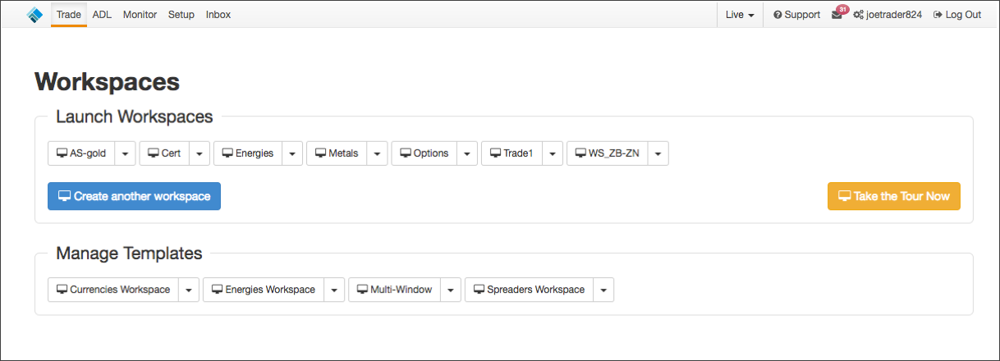
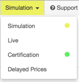
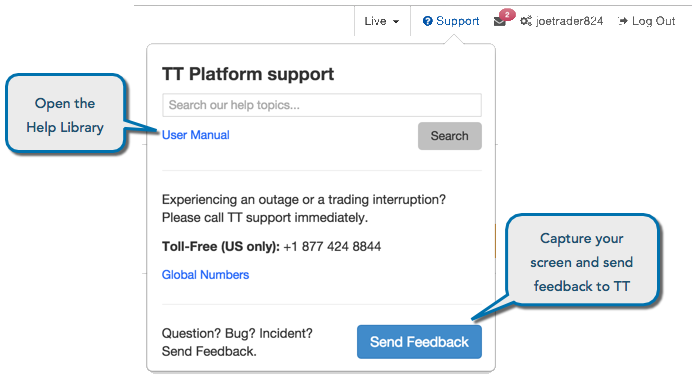
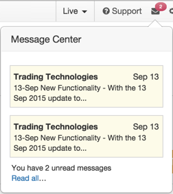

After you log in to TT, you'll land on the Workspaces home page.

The home page contains the following sections:
- Launch Workspaces — Contains your saved workspaces that can be opened, deleted, renamed, or shared as a template. It also contains the Create another workspace button that is used for creating a new workspace, as well as the Take the Tour Now button that is used for launching an automated tour of a workspace.
- Manage Workspaces — (Administrators only) Contains workspace templates created by a company administrator. As an administrator, you can delete, rename, or copy templates to new users in your company.
A Workspace Template can be used as a guide to help you create your own workspace. The templates are pre-configured with widgets that may be used for different trading markets and trading environments. Company administrators can share workspace templates with all other administrators and traders in a company.
After sharing a template, users in the company can select it when creating a new workspace. For administrators, the shared template appears in the Manage Templates section on the Trade application landing page. Each template has options for administering the template.
TT Title Bar
After you log in to the Trade application, the home page contains the TT platform title bar at the top of the page. The title bar provides access to your TT applications, trading environments, support, message center, and your TT account.

TT applications
The title bar provides quick access to the apps you are authorized to use:
Trading environments
On the title bar, you can access TT trading environments that provide different types of market data to suit
your needs.

TT provides the following trading environments:
- Simulation — Provides access to exchange price feeds with simulated order entry. All orders are matched by our internal matching engine and never submitted to the exchange. This allows users to test out new trading strategies, provide training for traders, and API solution testing, etc.
- Live: Provides connections to the exchange price feeds and matching engines for live trading.
- Certification — Provides connections to the exchange certification environment for both prices and order matching.
- Delayed Prices — Provides access to 15-minute delayed prices and our internal matching engine. This option allows you to learn about the TT platform without incurring the cost of receiving live prices from exchanges.
Support
Using the title bar, you can quickly access the online help and the TT support center to look for help or submit issues to TT:

Message Center
The Message Center displays summaries of messages from TT. The icon also indicates the number of unread messages.

Account Settings
The title bar displays your TT account name (TT ID). To access your TT account settings, click your account name in the TT application title bar.